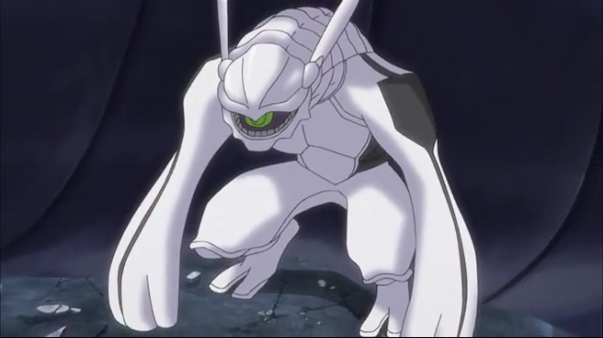
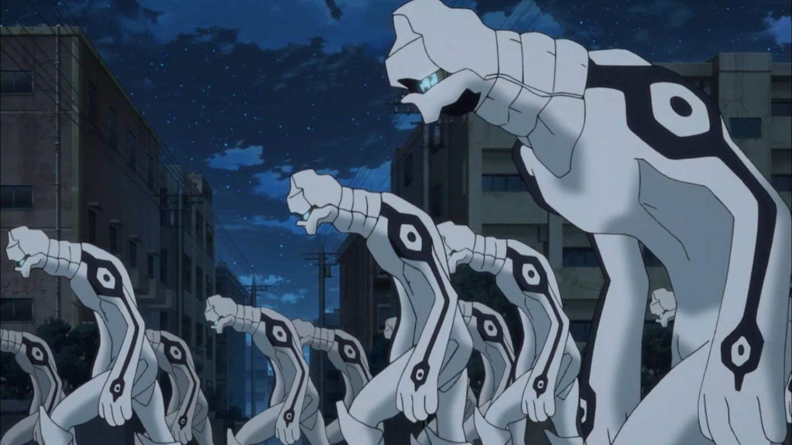

Desconocida: Ha causa de que estos proceden de multiples universos es imposible percibir un patron.
Se desconoce si existe alguna; ya que los invasores proceden de distintos multi-versos con multiples objetivos.
| Nombre | Aspecto | Descripción |
|---|---|---|
| Categoría: | Equipo Estándar | |
| Trion Body |  |
Los cuerpos de Trion son el implemento más básico otorgado por Triggers. Son virtualmente invulnerables a daños que no son causados por Trion (y por lo tanto por Triggers) también le otorgan al usuario varias mejoras físicas, así como un sistema de comunicación interno |
| Cape |  |
Trigger es una capa que actúa como armadura, lo que les permite evitar ciertos ataques. Puede resistir balas, pero no las hojas de atacante. También puede bloquear los efectos específicos y eliminar las partes afectadas. Si está dañado, la capa se regenerará en segundos |
| Receptor Trion |  |
Un secreto militar celosamente guardado, los Receptores de Trion son cuernos que se implantan permanentemente en las cabezas de los niños para mejorar dramáticamente su capacidad y calidad de Trion a medida que crecen. Los cuernos de Black Trigger se vuelven negros |
| Categoría: | Armas Atacante | |
| Organon |  |
Un Trigger le permite convocar hasta cinco anillos con seis cuchillas cada una girando alrededor del usuario tan rápido que normalmente son invisibles. Al extenderlos, puede cortar una ciudad en un instante. Además, tiene una espada para si los anillos no son suficiente para mantener a raya a los enemigos |
| Vorvoros |  |
Un Trigger le permite para licuarse, gasificarse y solidificarse. Gracias a su habilidad de licuarse posee una gran movilidad e inmunidad a los ataques dirigidos a su cuerpo. También puede usar su habilidad de solidificarse para crear cuchillas y la gasificarse para entrar en los pulmones del objetivo y posteriormente crear cuchillas e infligir daño interno. Alterar el estado de su cuerpo de trion deja su órgano de Trion y su sistema de suministro expuesto, pero puede contrarrestar esta debilidad protegiéndolo con su solidificación y también pudiendo crear señuelos |
| Categoría: | Armas Tiradores | |
| Lampyris |  |
Un Trigger que permite al usuario manipular innumerables "fragmentos" magnéticos a través de un guante. Al reaccionar entre sí, los fragmentos pueden crear una amplia gama de construcciones, como escudos, proyectiles afilados, cañones,espigas y shuriken gigante,... El magnetismo también puede ser explotado para restringir o atraer un objetivo después de disparar fragmentos en su cuerpo. Además, este disparador tiene vastas capacidades complementarias, que incluyen levitación, generación de pistas magnéticas para desplazamiento a alta velocidades, camuflaje en ambientes oscuros,... |
| Speiraskia |  |
Un Trigger que permite al usuario crear ventanas en el tejido del espacio. Las ventanas grandes pueden funcionar como puertas para teletransportar cosas, mientras que las pequeñas pueden expulsar pinchos para atravesar a los objetivos. Cuanto más grande sea la ventana, y mayor sea la distancia más Trion se consume . |
| Alektor |  |
Un Trigger que permite al usuario generar balas con forma de animales desde un núcleo ovoide sobre su mano. Al entrar en contacto con una construcción de Trion, la desestabilizan y, si el daño es suficiente, la convierten en un cubo de trion indestructible. De este modo, se puede neutralizar a los oponentes sin que puedan defenderse o contraatacar. También le permite al usuario absorber los cubo de Trion creados para regenerar su propio Trion |
| Categoría: | Armas Francotiradores | |
| Chelidon |  |
Un Trigger dotado con una potencia de fuego masiva que tiene múltiples configuraciones. Permite al usuario disparar rayos poderosos ya sea por orbes explosivos alrededor de su misma o en sus manos. Puede de cambiar de forma ha un cañón de brazo con una alta velocidad de disparo. Chelidon también es capaz de disparar rayos destructivos desde la espalda del usuario, así como de bombardear un área con un aluvión de balas.Como también de una habilitar el vuelo por un tiempo limitado. |